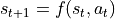
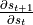
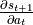

Accessing Jacobians of Dynamics¶
For some “old school” control algorithms like Differential Dynamic Programming (DDP), you need access to the Jacobians of dynamics.
If we say the state at time  is , and the action is , then our timestep can be thought of as:
is , and the action is , then our timestep can be thought of as:

We’d like to be able to access the Jacobians:
 - which we’ll call the “state Jacobian” (stateJac below)
 - which we’ll call the “action Jacobian” (actionJac below)
Getting these quantities out of Nimble is easy! Simply call:
stateJac = world.getStateJacobian()
actionJac = world.getActionJacobian()
That’ll return numpy arrays (not PyTorch tensors, computing these Jacobians is not itself differentiable) of the requested Jacobians.
These Jacobians will change as you change either the state or the action, so remember to recompute!
Performance note: internally, a call to either world.getStateJacobian() or world.getActionJacobian() must run a timestep and cache the result.
This means that if you call both without changing either your state or your action, the second Jacobian requested is (almost) free.
Be aware though that the first time you call either world.getStateJacobian() or world.getActionJacobian() in a given state and action, that’ll cost about the same as a call to nimble.timestep(...).